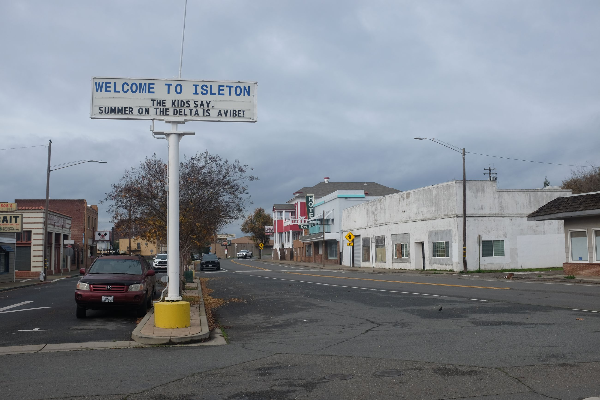
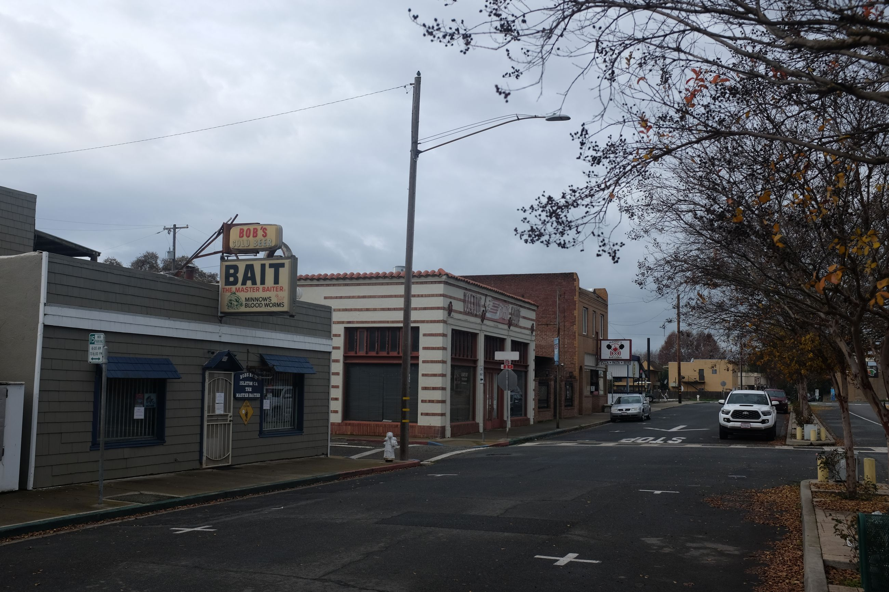
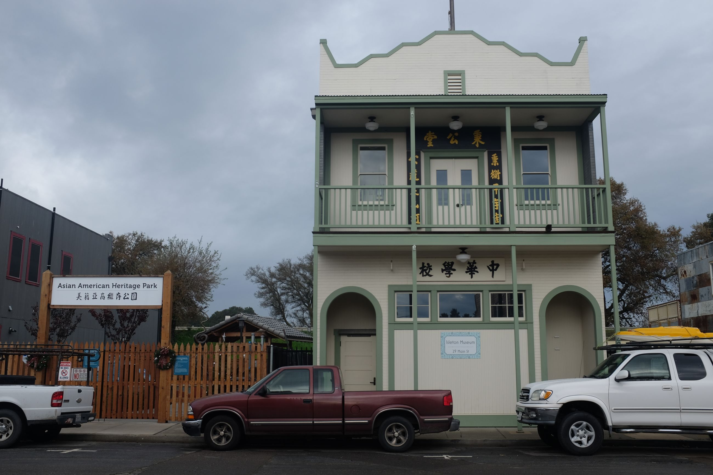
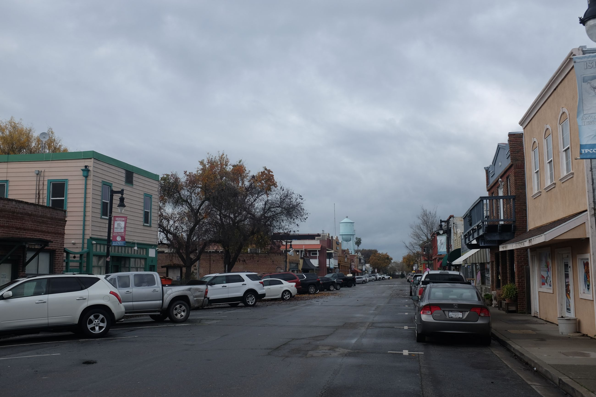
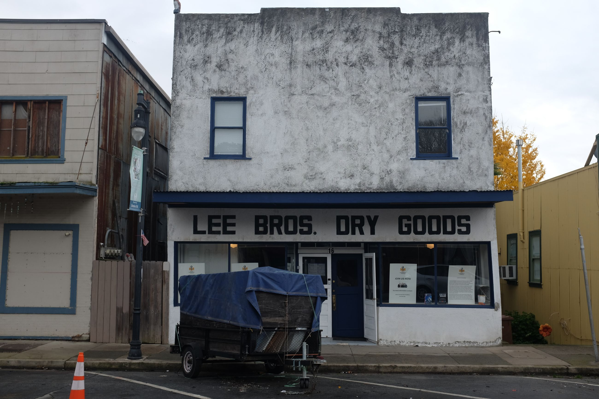
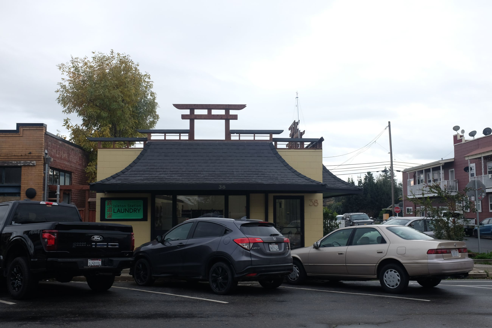

Heading further north towards Sacramento, we hit the Sacramento River Delta.
The first point of interest is the road in. Out from the foot of the Sierras in the gold rush valley and through agricultural land, we see the river. We make a small turn to drive alongside it -- this is the road that connects through all of the delta towns. There are no banisters on either side to prevent falling; it's a sharp bank. The road is morphed and wacky, with up and down mounds distorting its trajectory. Seems like the water somehow impacts the morphology of the streets. We bounce along the road for around 7 kilometres and end up into town when we see the town banner welcoming us:

As expected, it's relatively run down and low rise.
It's a cloudy day today, giving a gloomy overcast to town. It's also relatively early, so there's not many people around. We park and see a couple exit a house with their baby, walking towards town.

When we get to the town "centre" -- clustered around a main street -- we begin to see the traces of the Chinese and their contribution to California history. There is one preserved museum that's not open until later, and an Asian American Heritage Park that is temporarily closed.

We take only 30 minutes to walk around town. Some old buildings have been converted to museums, some bars, and some coffee shops. We walk into an unspsecting coffee shop and run into the couple that we saw earlier.
The shop is run by a lesbian couple who settled here during covid. They built the place themselves (wiring and gas aside) and wanted it to be an art studio to work in. They started making coffee on the side -- and that's the thing that stuck with the community. As such they were more baristas now than artists, though the dream still lived on. We had a short chat with the couple inside, who said they saw us and asked us where we had visited from. "Small town," he says, "everyone sort of knows everyone and you can't miss them." They are a couple that used to be in the Bay Area but moved here for a quieter life.
I wish we had more time to pop in and out of the shops -- another place I'll be back. In the morning, and with the overcast, the town was sleepy and seemed abandoned. Some remaining pictures of the old/re-done buildings and the town
  
Onwards and upwards to Locke, California.